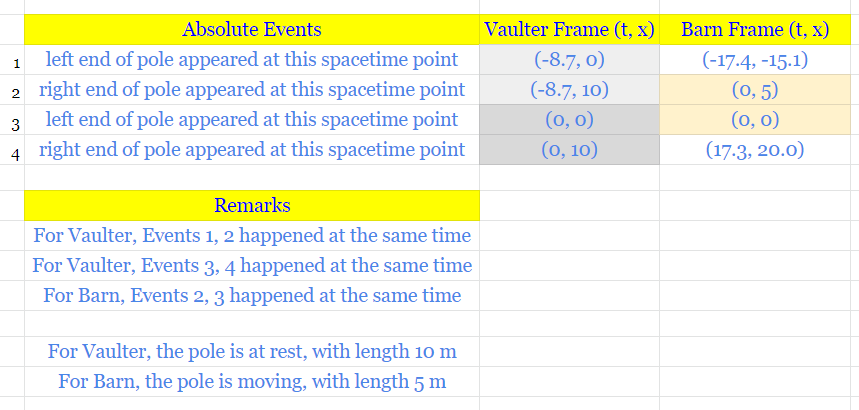
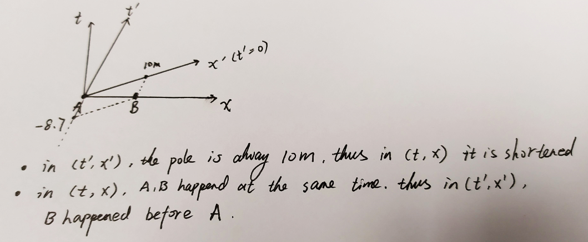

OLD SR: Lorentz Transformation¶
| Date: | 22 Aug 2019 |
|---|
Dependency¶
- Linear Algebra
What is the problem ?¶
- We only talk about Lorentz Transformation in Special Relativity, since it is a consequence of Minkowski Metric
- Length of an object and Time interval of a process are not absolute! They are relative, meaning they are different in different reference frames!
Derivation¶
Step 1 Lorentz Transformation is a consequence of Minkowski Metric
\[\begin{split}\begin{align*}
& \text{Notation: In }\Lambda^a_c \text{, } a,c \text{ are indices, }a \text{ is not Power}\\
& \text{Let } \Lambda^a_c \text{ be any } 4\times 4 \text{ matrix}\\
& \text{If } \Lambda^a_c \Lambda^b_d g_{ab} =g_{cd} \text{ where } g=g_{\text{Minkowski}} \\
& \text{Then } \Lambda \text{ is a Lorentz matrix}\\
& \text{Thus if } x'^{(a)} =\Lambda^a_c x^{(c)} \\
& \Rightarrow ds'^2 = g_{ab} dx'^{(a)}dx'^{(b)}\\
& \;\;\;\; = g_{ab} \Lambda^a_c x^{(c)} \Lambda^b_d x^{(d)}\\
& \;\;\;\; = g_{cd} x^{(c)} x^{(d)}\\
& \;\;\;\; = ds^2 \\
& \text{Thus we see Lorentz Transformation is any Transformation}\\
& \text{that keeps the Distance } ds\text{ invaraint in Minkowski space}
\end{align*}\end{split}\]
Step 2 A specific case of Lorentz matrix
- Let \((t,x,y,z)\) represent an Event in a reference frame that is at rest, that is, this event happend at position \((x,y,z)\) at time \(t\)
- Consider another frame moving at speed (normalized by light speed) \(\beta = {v \over c}\) along \(x\) axis relative to the RestFrame, then in MovingFrame, the same event happens at \((t',x',y',z')=\text{LorentzTransform}(t,x,y,z)\)
\[\begin{split}\begin{align*}
&\Lambda= \left(\array{
\gamma & -\gamma\beta \\
-\gamma\beta & \gamma
\\&&1\\&&&1
}\right) \\
& where \\
& -1\le \beta = {v \over c} \le 1 \\
& \gamma = {1\over \sqrt{1-\beta^2}}
\end{align*}\end{split}\]
- Note: I haven’t figured out how to derive the following from Step 1, but the definition \(\Lambda^a_c \Lambda^b_d g_{ab} =g_{cd}\) can be easily verified
Code¶
The code is written by myself: Tesla Cat, Ding Ruiqi. And I am only saying it out loud here because the following is supposed to be submitted to my lecturer as homework ..
import numpy as np
from numpy.linalg import inv
class SpecialRelativity:
def __init__(self,beta):
self.beta = beta
self.gamma = 1/np.sqrt(1-beta**2)
self.LorentzMatrix = np.array([
[self.gamma, -self.gamma*beta,0,0],
[-self.gamma*beta, self.gamma,0,0],
[0,0,1,0],
[0,0,0,1]
])
self.InverseLorentzMatrix = inv(self.LorentzMatrix)
def LorentzTransform(self,RestFrameCoordinate):
MovingFrameCoordinate = np.matmul( self.LorentzMatrix, RestFrameCoordinate )
return MovingFrameCoordinate
def InverseLorentzTransform(self,MovingFrameCoordinate):
RestFrameCoordinate = np.matmul( self.InverseLorentzMatrix, MovingFrameCoordinate)
return RestFrameCoordinate
Example 1: Vaulter in the barn¶
Problem: Refer to PC4248 2019 Assignment 01 Question 1
My Solution:
beta = np.sqrt(3)/2
SR = SpecialRelativity(beta)
print("\n Part (a) and (b)")
Event_B_RestFrameCoordinate = np.array([0,5,0,0]).reshape([4,1])
Event_B_MovingFrameCoordinate = SR.LorentzTransform(Event_B_RestFrameCoordinate)
print("In Barn frame, Event B happned at \n", Event_B_RestFrameCoordinate)
print("In Vaulter frame, Event B happned at \n", Event_B_MovingFrameCoordinate)
print("\n Part (c)")
VaulterFrameEvents = [
[-8.7, 0, 0, 0],
[-8.7, 10, 0, 0],
[0, 0, 0, 0],
[0, 10, 0, 0]
]
BarnFrameEvents = []
for event in VaulterFrameEvents:
MovingFrameCoordinate = np.array(event).reshape([4,1])
RestFrameCoordinate = SR.InverseLorentzTransform(MovingFrameCoordinate)
BarnFrameEvents.append(RestFrameCoordinate.tolist())
print("VaulterFrameEvents:")
for e in VaulterFrameEvents:
print(e)
print("BarnFrameEvents:")
for e in BarnFrameEvents:
print(e)
Output:
Part (a) and (b)
In Barn frame, Event B happned at
[[0]
[5]
[0]
[0]]
In Vaulter frame, Event B happned at
[[-8.66025404]
[10. ]
[ 0. ]
[ 0. ]]
Part (c)
VaulterFrameEvents:
[-8.7, 0, 0, 0]
[-8.7, 10, 0, 0]
[0, 0, 0, 0]
[0, 10, 0, 0]
BarnFrameEvents:
[[-17.39999999999999], [-15.068842025849225], [0.0], [0.0]]
[[-0.07949192431122754], [4.931157974150768], [0.0], [0.0]]
[[0.0], [0.0], [0.0], [0.0]]
[[17.320508075688764], [19.999999999999993], [0.0], [0.0]]
Answers to Assignment:
- Part a: \(t'_B = -8.7\)
- Part b: \(10 m\)
- Part c:

